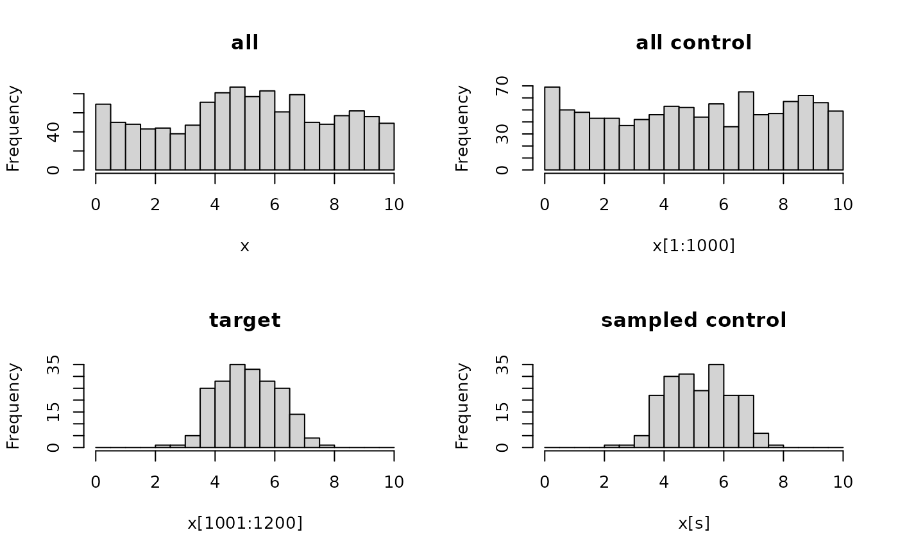

R/sampleControlElements.R
sampleControlElements.RdRandomly sample from a set of control (background) elements, such that the selected elements are similarly distributed as a given set of target (foreground) elements.
sampleControlElements(
x,
idxTarget,
idxControl = NULL,
nbins = 50,
oversample = 1
)numeric vector (or list of numeric vectors).
idxTarget and idxControl refer to the elements of x.
If x is a list, all elements must have the same length.
numeric or logical vector specifying the elements
in x that define the target distribution to be matched by the
control elements.
numeric or logical vector specifying the
complete set of possible control elements in x (default: all that
are not in idxTarget), from which a subset is to be sampled.
numeric(1) or numeric(length(x)) if x is a
list, specifying the number of bins to group the values of x into. Higher
numbers of bins will increase the match to the target distribution(s),
but may fail if there are few elements to sample from (will throw a warning).
The number of control elements to sample for each target element.
numeric vector with round(length(idxTarget) * oversample) elements, specifying the index (positions) of the sampled control elements.
x <- c(runif(1000, min = 0, max = 10),
rnorm(200, mean = 5, sd = 1))
s <- sampleControlElements(x, idxTarget = 1001:1200, idxControl = 1:1000)
par(mfrow=c(2,2))
h <- hist(x, breaks = 20, main = "all")
hist(x[1:1000], breaks = h$breaks, main = "all control")
hist(x[1001:1200], breaks = h$breaks, main = "target")
hist(x[s], breaks = h$breaks, main = "sampled control")
